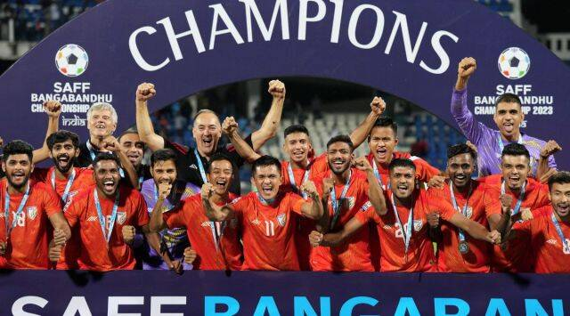
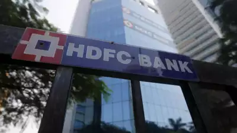

Maharashtra Deputy Chief Minister Ajit Pawar expressed that it was time for his uncle Sharad Pawar to retire, alleging that in BJP, leaders retire at the age of 75. Ajit Pawar also blamed Sharad Pawar for NCP's loss of chance to have a CM in 2004. There was a recent split in NCP with Ajit Pawar claiming the support of over 40 MLAs and joining the Shiv Sena-BJP coalition government in Maharashtra.
Ajit Pawar, with senior party leaders Praful Patel, Chhagan Bhujbal, Dilip Walse Patil by his side, asserted to be the real NCP.
"In BJP, leaders retire at 75, when are you going to stop," Ajit Pawar said, speaking at the meeting convened by him in suburban Bandra as a show of strength.
'Govt Wants to Bring 10 Lakh People in J&K From Outside': Mehbooba Mufti Opposes Scheme for Landless People
The Jammu & Kashmir Government on Monday said that they have approved a proposal for allotment of 5 Marlas of land each to landless Pradhan Mantri Awas Yojana - Gramin beneficiaries
Former Jammu and Kashmir Chief Minister Mehbooba Mufti has opposed the government’s move to provide land to landless people in the union territory.
BJP's Anti-Dalit, Anti-tribal Face Exposed with Urinating Incident: Rahul Gandhi
A video of a man, purported to be a local BJP leader from Madhya Pradesh, showing him urinating on a tribal person in the state's Sidhi district recently went viral on social media leading to demands for his arrest from several quarters
Congress leader Rahul Gandhi on Wednesday said that atrocities on tribals and Dalits are increasing under the BJP rule as he decried the incident in Madhya Pradesh where a tribal was urinating upon by a man, alleged to be a BJP leader.
Sports

Goalkeeper Gurpreet Singh Sandhu shines in shootout as India clinch SAFF Championship against Kuwait
India had been taken into deep waters over the past four days. More than 240 minutes of physically gruelling football against two good teams in Kuwait and Lebanon. And penalty shootouts were needed to decide these intense games.
This was despite Kuwait’s best attempts at invoking the dark arts in the final and disrupting this new-look Indian team at every juncture.
I am numb with rage, want capital punishment for guilty: Harbhajan Singh on Manipur incident
Former India spinner and Rajya Sabha MP Harbhajan Singh has demanded “capital punishment” for all those who were involved in the heinous crime of parading two Manipuri women naked and allegedly gang-raping them.
“If I say I am angry, it’s an understatement. I am numb with rage. I am ashamed today after what happened in Manipur. If the perpetrators of this ghastly crime aren’t brought to the book and handed capital punishment, we should stop calling ourselves human.
Asia Cup schedule: It could be 3 India-Pak games in 15 days
The six-team ODI tournament, which is a pre-cursor to the ICC World Cup will start in Multan where hosts Pakistan takes on Nepal.
Meanwhile, after facing their arch-rivals in the tournament-opener, Rohit Sharma-led team India will have a one-day break before they face Nepal on September 4 at Kandy.
business

NEW DELHI: HDFC Bank on Thursday became the second most valu ..
India's rising airfares: Aviation sector needs to address systemic issues to control prices
After mega-aircraft order, Air India places large order for 800 jet engines with CFM in July
Infosys Q1 results: Profit jumps 10.9% to Rs 5,945 crore; IT firm cuts FY24 revenue guidance
L&T to announce Q1 results on July 25, firm's board to consider share buyback, special dividend proposals
NCLT extends deadline for completion of insolvency resolution of Future Retail to Aug 17
‘No disruption is expected’: Adani Group to not merge ACC, Ambuja cement units
This clarification at the annual shareholder meeting by Adani CEO, comes after media reports emerged earlier that the group was exploring a merger between the two companies.
Meanwhile, after facing their arch-rivals in the tournament-opener, Rohit Sharma-led team India will have a one-day break before they face Nepal on September 4 at Kandy.